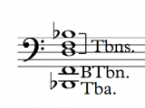

How to Use Chord Voicings Effectively – Part 2
After having a look at the fundamentals of chord voicings in Part 1, we’ll have a look at other important factors for good chord voicings.
Another basic element of effective chord voicings are so called “Low Interval Limits” (LIL). The lower you get on the piano, for example, the more tricky it is to find chords that don’t sound muddy. Many people trust their ear on these things, which is basically a good idea. However sometimes you might be mislead by the sound texture, for example of your piano that you compose on, to believe something does sound fine when it actually translates into muddyness on real instruments. For every two notes that sound together in a certain interval, there is a limit how low you can go with them without them sounding muddy. Basically you can dissect every voicing with these limits into every internal interval.
You’ll see a chart of these low interval limits below. However, consider that these are just guidelines. On some occasions it might be possible or even desired to go lower, for example if you want to create a very dark texture. The rule of thumb is, if you follow these limits, you can be sure that your voicing will not sound muddy. Note that very consonant intervals like the perfect fifth can go much lower without sounding muddy compared to more dissonant intervals.
If you create a voicing, checking each interval for violating the low interval limits is actually not needed most of the time. Often, it is sufficient to check the lowest interval for violations.
As an example, the following voicing doesn’t violate any low interval limits (it is actually the 4 Trombones+Tuba voicing from the entrance of the Island Fanfare from JURASSIC Park as heard here:


However, this voicing does violate the LIL.
The minor third between a and c is too low. If you check these voicings on the piano, you will hear how the second voicing has a much more instable and muddy sound even though its root note is more than an octave higher than the “Jurassic Park voicing”, which has way more sonority and resonance.
When you check your voicings for LILs, take every voice into account if it is spread over several instruments or groups.
The important exception here is the case when the lowest note of your voicing is not the root note. In this cases, you have to pretend that the root is present in the voicing as lowest voice and check the low interval limits with it in mind. For example this Am7 voicing looks just fine at first sight:
However, due to the fact that the lowest note is the third of the chord and not the root, we need to presume the presence of the root note to check for LILs:
In this case the lowest third is too low again, therefore the voicing should be revoiced in order to not sound muddy.
At first, it will be a little bit annoying to actually check every chord you write against the table from above, however with a little experience you will memorize these LILs and also automatically sense violations. The important thing here is to get a sensitive hearing for such problems.
However, be warned to think about easily avoiding violations of the LILs by generally distributing any harmonic content in a high register. While there are no “High Interval Limits”, generally harmonic content is best to be distributed more or less in the octave below middle c.

This register has the advantage of being not too low for most intervals and having a high degree of resonance.
If you compare this Emaj7 voicing:
to the very same voicing two octaves higher:
you will hear a very clear difference in resonance. The effect also happens already at one octave difference, however two octaves make it even clearer. The lower voicing has a strong resonance and can harmonically support any melody on top of it. The higher one has a certain harmonic quality as well, however imagining a bass note and a melody on top of it will very quickly make clear that it has not much harmonic supporting power. This becomes an even more important issue in orchestral writing. Many inexperienced orchestrators and composers distribute the harmonic content way too high in their writing leaving a huge “empty space” in the low register which will result in a unfocussed high register and a very empty overall sound.
Another very misleading factor regarding good voicings is the bad influence of hand limitations of piano players. In orchestral chord voicings, the general rule of thumb is to not exceed a distance more than an octave between the single voices of the chord (with exception of the lowest to the 2nd lowest voice which has no limit). Otherwise, the voicing tends to fall apart acoustically and sounds partially detached. The span of the hand however doesn’t allow to follow this general rule on the piano so we often see, play and compose voicings like this on the piano:
While this is not avoidable in piano music, unfortunately many composers/orchestrators translate this voicing directly to their orchestral arrangements ignoring the 2 octave gap in the middle. The result will be a very strange sounding inhomogenous orchestral chord. In order to translate that properly to orchestra it needs the step of ignoring ones own fingers and fill up the gap for example like these 3 examples:


None of the voicing violates the LILs or has voices further than an octave apart. However, every voicing has certain advantages and disadvantages.
Voicing 1 has a fairly open and transparent structure due to the quite large intervals involved. Note that the third of the chord is stated the first time in the octave below middle c. Especially the third of a chord has a strong influence on the resonance so the lower you put it without violating the LILs, the more resonance you will get. Also, note the fairly even distribution between chord tones. We have the root note stated 3 times and the third and fifth two times each. This voicing would sound very good as a string voicing, having a lot of beautiful resonance and an open structure to not sound overly dense.
Voicing 2 looks basically quite similar to Voicing 1, however has a few flaws compared to it. The above mentioned resonant third is stated the first time in the middle octave, losing its potential resonance. Also we have a quite unbalanced distribution of chord tones: 4 times the root, 3 times the fifth and only once the third. This voicing will feel quite unbalanced and you would need to orchestrate it very carefully in order to make it sound good. If I were to decide for one of the first two voicings I would definitely go for the first one.
Voicing 3 basically fills up the gap from the piano vocing with every available chord note in close position, resulting in a 12-voice chord. This voicing sounds very dense and thick which is not always the desired effect, however it would work nicely as a tutti chord with all instruments from the orchestra involved.
Orchestrating voicings specifically for instruments will be dealt in a later part of this series. Next time we will focus on open vs. close voicings and start working with more complex chord structures.
Robin Hoffmann
Born in a musical family, Robin Hoffmann grew up surrounded by music. Besides scoring several feature films and orchestrating major game titles such as Anno 1404, Black Prophecy and Halo Legends, Robin has written a number of concert compostions including a Violin Concerto which has been recorded with the LONDON SYMPHONY ORCHESTRA at Abbey Road Studios. He co-composed the multiple award-winning musical Dāllebach Kari and has worked on music for several international artists such as Sarah Chang, Russell Watson, The Lovebugs, and Seven. He is also teaching several students in composition/orchestration as well as tutoring the renowned online course programmes by ThinkspaceOnline.


No Trackbacks.